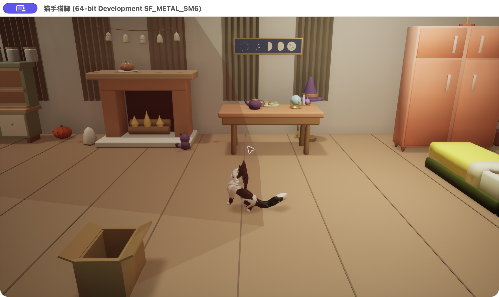
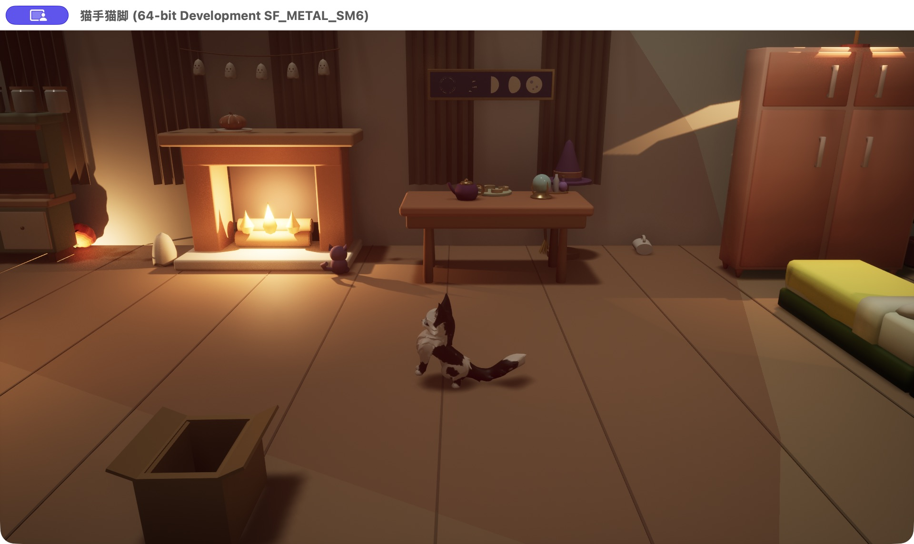
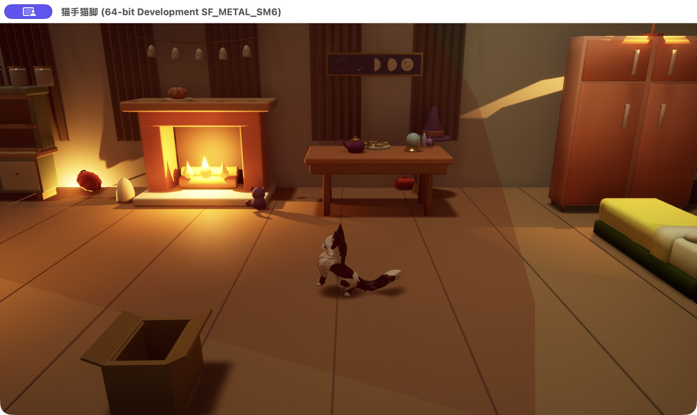
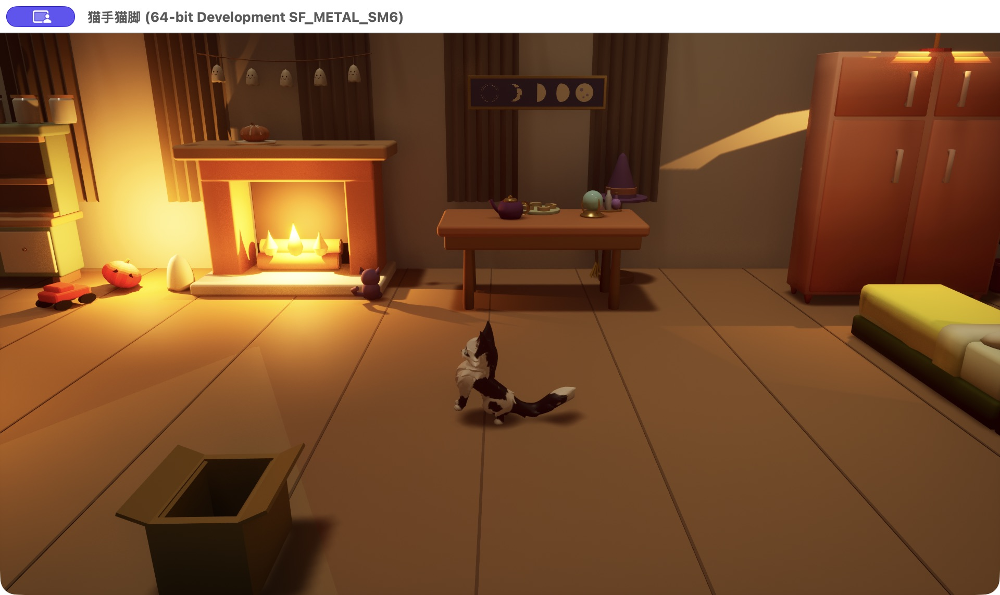

猫手猫脚 · 灯光逐步对比
本机 Mac 实机 · 1920×1080 · 100% 渲染比例 · 软件 Lumen，无硬件光追。每阶段预热 15 秒，前台采样 30 秒；采样显示正常 HUD，截图隐藏 HUD。NPC 保持巡逻，场景机位固定。关闭垂直同步与帧率上限后测量；正式游戏保留 60 FPS 上限。
每一步与前一步并排展示。最低 5 秒平均帧率用于 45 FPS 门槛判断，P99 记录偶发慢帧。本报告只代表本机此机位；移动玩法另测，不推断 Windows 表现。
基线
平均 119.97 FPS · 最低 5 秒 119.79 FPS · P99 8.87 ms
① 软件 Lumen
平均 119.27 FPS · 最低 5 秒 115.61 FPS · P99 9.52 ms
基线

① 软件 Lumen
② 暖色灯光
平均 116.26 FPS · 最低 5 秒 111.82 FPS · P99 16.75 ms
① 软件 Lumen

② 暖色灯光
③ 后期调色
平均 119.80 FPS · 最低 5 秒 118.79 FPS · P99 8.68 ms
② 暖色灯光

③ 后期调色
④ 淡暖色雾
平均 117.83 FPS · 最低 5 秒 107.63 FPS · P99 16.64 ms
③ 后期调色

④ 淡暖色雾
原始 JSON、PNG 与 fps.csv 同目录保存。Lumen 设置参考 Epic 性能指南。